File: 000120.gt.txt (if the image is defective, simply delete all Arabic text and the line will be excluded)
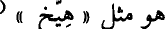
هو مثل « هيخ » (
File: 000121.gt.txt (if the image is defective, simply delete all Arabic text and the line will be excluded)
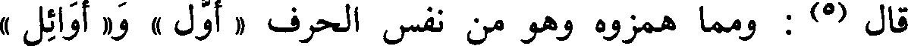
قال (5) : ومما همزوه وهو من نفس الحرف « أول » و« أوائل »
File: 000122.gt.txt (if the image is defective, simply delete all Arabic text and the line will be excluded)
استثقلوا ألفا بين واوين .
File: 000123.gt.txt (if the image is defective, simply delete all Arabic text and the line will be excluded)
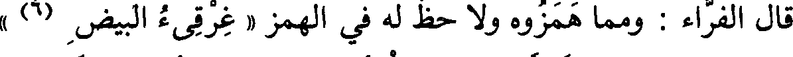
قال الفراء : ومما همزوه ولا حظ له في الهمز « غرقيء البيض (6) »
File: 000124.gt.txt (if the image is defective, simply delete all Arabic text and the line will be excluded)
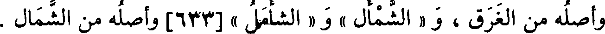
وأصله من الغرق ، و « الشمأل «» و « الشأمل » [633] وأصله من الشمال .
File: 000125.gt.txt (if the image is defective, simply delete all Arabic text and the line will be excluded)
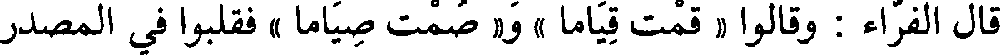
قال الفراء : وقالوا « قمت قياما » و« صمت صياما » فقلبوا في المصدر
File: 000126.gt.txt (if the image is defective, simply delete all Arabic text and the line will be excluded)
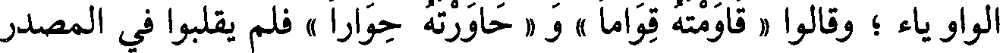
الواو ياء ؛ وقالوا « قاومته قواما » و « حاورته حوارا » فلم يقلبوا في المصدر
File: 000127.gt.txt (if the image is defective, simply delete all Arabic text and the line will be excluded)
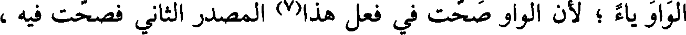
الواو ياء ؛ لأن الواو صحت في فعل هذا(7) المصدر الثاني فصحت فيه ،
File: 000128.gt.txt (if the image is defective, simply delete all Arabic text and the line will be excluded)
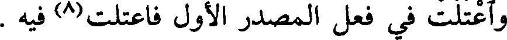
واعتلت في فعل المصدر الأول فاعتلت(8) فيه .
File: 000129.gt.txt (if the image is defective, simply delete all Arabic text and the line will be excluded)
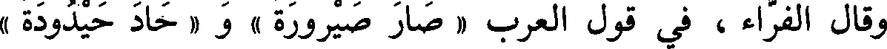
وقال الفراء، في قول العرب « صار صيرورة » و « حاد حيدودة »
File: 000130.gt.txt (if the image is defective, simply delete all Arabic text and the line will be excluded)
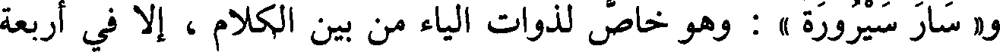
و« سار سيرورة » : وهو خاص لذوات الياء من بين الكلام ، إلا في أربعة
File: 000131.gt.txt (if the image is defective, simply delete all Arabic text and the line will be excluded)
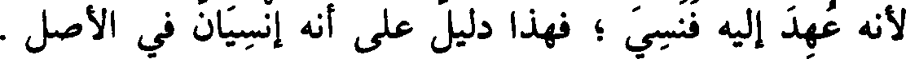
لأنه عهد إليه فنسي ؛ فهذا دليل على أنه إنسيان في الأصل .
File: 000132.gt.txt (if the image is defective, simply delete all Arabic text and the line will be excluded)
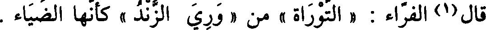
قال(1) الفراء : « التوراة » من « وري الزند » كأنها الضياء .
File: 000133.gt.txt (if the image is defective, simply delete all Arabic text and the line will be excluded)
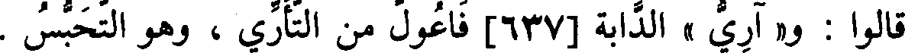
قالوا : و« آري » الدابة[637] فاعول من التأري ، وهو التحبس .
File: 000134.gt.txt (if the image is defective, simply delete all Arabic text and the line will be excluded)
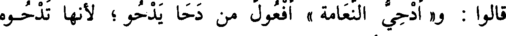
قالوا : و« أدحي النعامة » أفعول من دحا يدحو ؛ لأنها تدحوه
File: 000135.gt.txt (if the image is defective, simply delete all Arabic text and the line will be excluded)
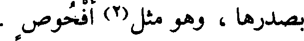
بصدرها ، وهو مثل(2) أفحوص .
File: 000136.gt.txt (if the image is defective, simply delete all Arabic text and the line will be excluded)
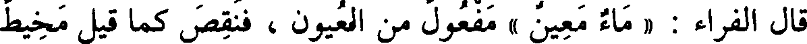
قال الفراء : « ماء معين » مفعول من العيون ، فنقص كما قيل مخيط
File: 000137.gt.txt (if the image is defective, simply delete all Arabic text and the line will be excluded)
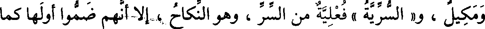
ومكيل ، و« السرية » فعلية من السر ، وهو النكاح ، إلا أنهم ضموا أولها كما
File: 000138.gt.txt (if the image is defective, simply delete all Arabic text and the line will be excluded)
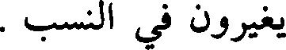
يغيرون في النسب .
File: 000139.gt.txt (if the image is defective, simply delete all Arabic text and the line will be excluded)
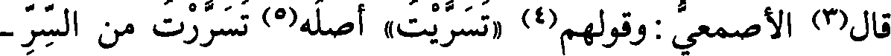
قال(3) الأصمعي:وقولهم(4) «تسريت» أصله(5) تسررت من السر -
File: 000140.gt.txt (if the image is defective, simply delete all Arabic text and the line will be excluded)
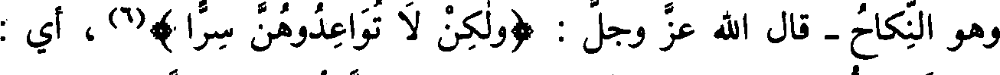
File: 000141.gt.txt (if the image is defective, simply delete all Arabic text and the line will be excluded)
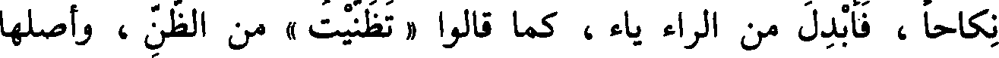
نكاحا ، فأبدل من الراء ياء ، كما قالوا « تظنيت » من الظن ، وأصلها
File: 000142.gt.txt (if the image is defective, simply delete all Arabic text and the line will be excluded)
تظننت .
File: 000143.gt.txt (if the image is defective, simply delete all Arabic text and the line will be excluded)
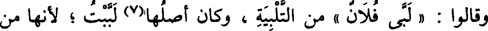
وقالوا : « لبى فلان » من التلبية ، وكان أصلها(7) لببت ؛ لأنها من
File: 000144.gt.txt (if the image is defective, simply delete all Arabic text and the line will be excluded)
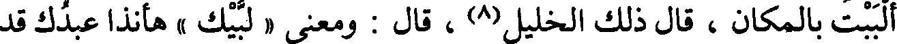
ألببت بالمكان ، قال ذلك الخليل(8) ، وقال : ومعنى « لبيك » هاأناذاعبدك قد
File: 000145.gt.txt (if the image is defective, simply delete all Arabic text and the line will be excluded)
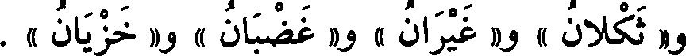
و« ثكلان » و« غضبان » و « غيران » و« خزيان ».
File: 000146.gt.txt (if the image is defective, simply delete all Arabic text and the line will be excluded)
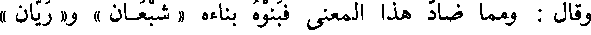
وقال : ومما ضاد هذا المعنى فبنوه بناءه « شبعان » و« ريان »
File: 000147.gt.txt (if the image is defective, simply delete all Arabic text and the line will be excluded)
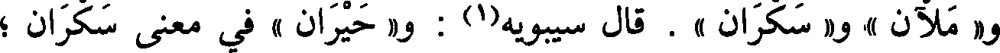
و« ملآن » و« سكران » . قال سيبويه(1) : و« حيران » في معنى سكران ؛
File: 000148.gt.txt (if the image is defective, simply delete all Arabic text and the line will be excluded)
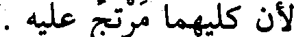
لأن كليهما مرتج عليه .
File: 000149.gt.txt (if the image is defective, simply delete all Arabic text and the line will be excluded)
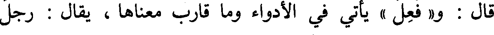
قال : و« فعل » يأتي في الأدواء وما قارب معناها ، يقال : رجل
To Save: `Ctrl+s`, make sure to choose `Webpage, complete`!